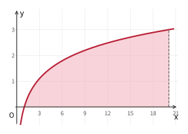
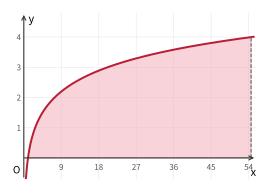
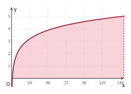

別冊練習問題 4 の解答 対数曲線と軸で囲まれた面積
(1) 曲線 \(y=\log x\)、\(x\) 軸、直線 \(x=e^{3}\) で囲まれた部分の面積を求めよ。
正負を確認する
\(1\leqq x\leqq e^{3}\) では \(\log x\geqq0\)（\(\log1=0\)、増加）。グラフは \(x\) 軸の上側。

面積の式を立てる
\[S=\int_1^{e^{3}}\log x\,dx\]原始関数を求める（部分積分）
\(\log x=\log x\) とみて、\(f=\log x,\ g'=1\) とおく。
\[f'=\dfrac1x,\ g=x\]\[\int\log x\,dx=x\log x-\int\dfrac1x\cdot x\,dx=x\log x-\int1\,dx=x\log x-x\]上端 \(x=e^{3}\) を代入
\(\log e^{3}=3\)。
\[e^{3}\log e^{3}-e^{3}=3e^{3}-e^{3}\]下端 \(x=1\) を代入
\[\log1-1=0-1=-1\]（上端）\(-\)（下端）
\[S=\left(3e^{3}-e^{3}\right)-(-1)=(2)e^{3}+1\]【答案】
\[(2)e^{3}+1\]答
(2) 曲線 \(y=\log x\)、\(x\) 軸、直線 \(x=e^{4}\) で囲まれた部分の面積を求めよ。
正負を確認する
\(1\leqq x\leqq e^{4}\) では \(\log x\geqq0\)（\(\log1=0\)、増加）。グラフは \(x\) 軸の上側。

面積の式を立てる
\[S=\int_1^{e^{4}}\log x\,dx\]原始関数を求める（部分積分）
\(\log x=\log x\) とみて、\(f=\log x,\ g'=1\) とおく。
\[f'=\dfrac1x,\ g=x\]\[\int\log x\,dx=x\log x-\int\dfrac1x\cdot x\,dx=x\log x-\int1\,dx=x\log x-x\]上端 \(x=e^{4}\) を代入
\(\log e^{4}=4\)。
\[e^{4}\log e^{4}-e^{4}=4e^{4}-e^{4}\]下端 \(x=1\) を代入
\[\log1-1=0-1=-1\]（上端）\(-\)（下端）
\[S=\left(4e^{4}-e^{4}\right)-(-1)=(3)e^{4}+1\]【答案】
\[(3)e^{4}+1\]答
(3) 曲線 \(y=\log x\)、\(x\) 軸、直線 \(x=e^{5}\) で囲まれた部分の面積を求めよ。
正負を確認する
\(1\leqq x\leqq e^{5}\) では \(\log x\geqq0\)（\(\log1=0\)、増加）。グラフは \(x\) 軸の上側。

面積の式を立てる
\[S=\int_1^{e^{5}}\log x\,dx\]原始関数を求める（部分積分）
\(\log x=\log x\) とみて、\(f=\log x,\ g'=1\) とおく。
\[f'=\dfrac1x,\ g=x\]\[\int\log x\,dx=x\log x-\int\dfrac1x\cdot x\,dx=x\log x-\int1\,dx=x\log x-x\]上端 \(x=e^{5}\) を代入
\(\log e^{5}=5\)。
\[e^{5}\log e^{5}-e^{5}=5e^{5}-e^{5}\]下端 \(x=1\) を代入
\[\log1-1=0-1=-1\]（上端）\(-\)（下端）
\[S=\left(5e^{5}-e^{5}\right)-(-1)=(4)e^{5}+1\]【答案】
\[(4)e^{5}+1\]答